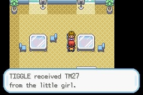
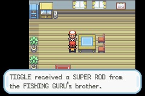
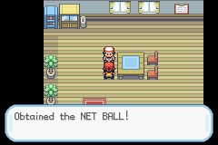

บทที่ 15 / 29
ถนนหมายเลข12-15
❖
ลงมาเรื่อยๆ จนเจอทางผ่าน ขึ้นไปชั้นสอง ผู้หญิงจะให้ TM27 Return มา

ถนนสายนี้ก็มีคาบิก้อนเลเวล30ขวางทางเช่นกัน จะสู้หรือจับก็แล้วแต่ แล้วลงมาเรื่อยๆ จะเจอบ้านหลังหนึ่ง คนข้างในจะให้ Super Rod ซึ่งเป็นเบ็ดตกปลาขั้นดีสุด และถ้าเราโชว์โปเกมอน”คอยคิง”<Magikarp>ที่ตัวยาวกว่าที่เขาบันทึกไว้ให้เขาดู เราจะได้รับ Net Ball ซึ่งไว้จับโปเกมอนน้ำหรือแมลง


เมื่อมาถึงถนนหมายเลข13ให้เลี้ยวซ้าย แล้วลงไปตามทางเรื่อยๆ แล้วไปทางซ้ายจนถึงอาคารหลังหนึ่ง ขึ้นไปชั้นสอง ถ้าเราจับโปเกมอนได้50ตัว เขาจะให้ Exp.Share (ไอเท็มสำหรับแบ่งค่าประสบการณ์ให้ตัวที่ไม่ได้ร่วมต่อสู้ด้วย) เดินออกจากอาคารทางประตูซ้าย ก็จะถึงเมืองเซคิชิคุ